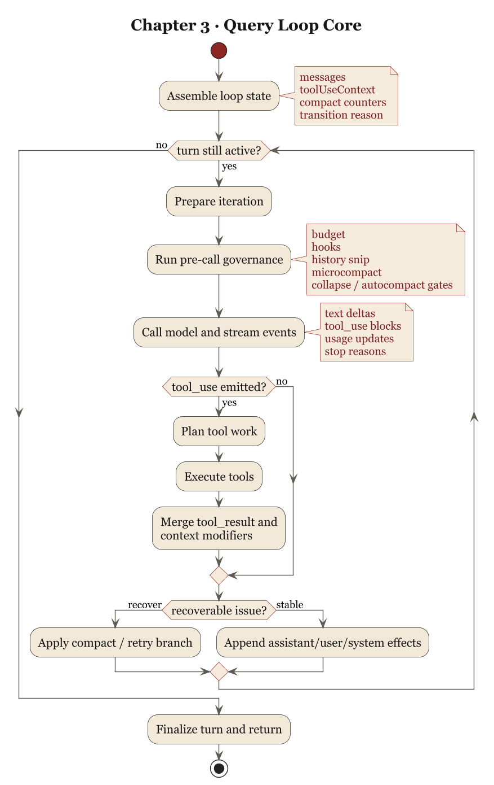
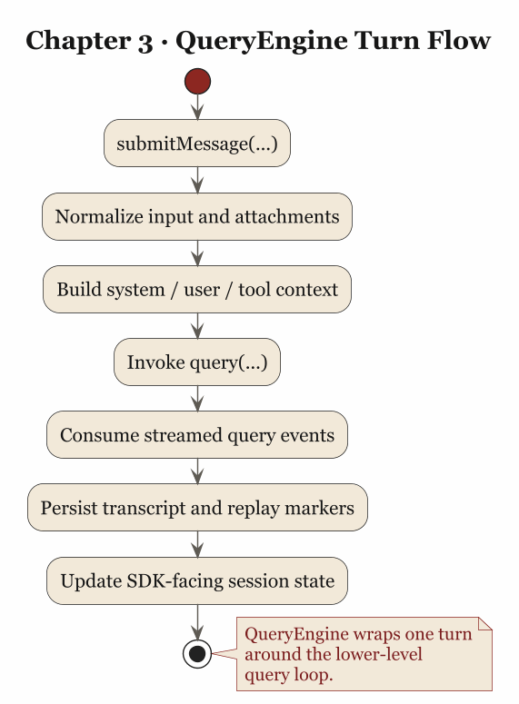
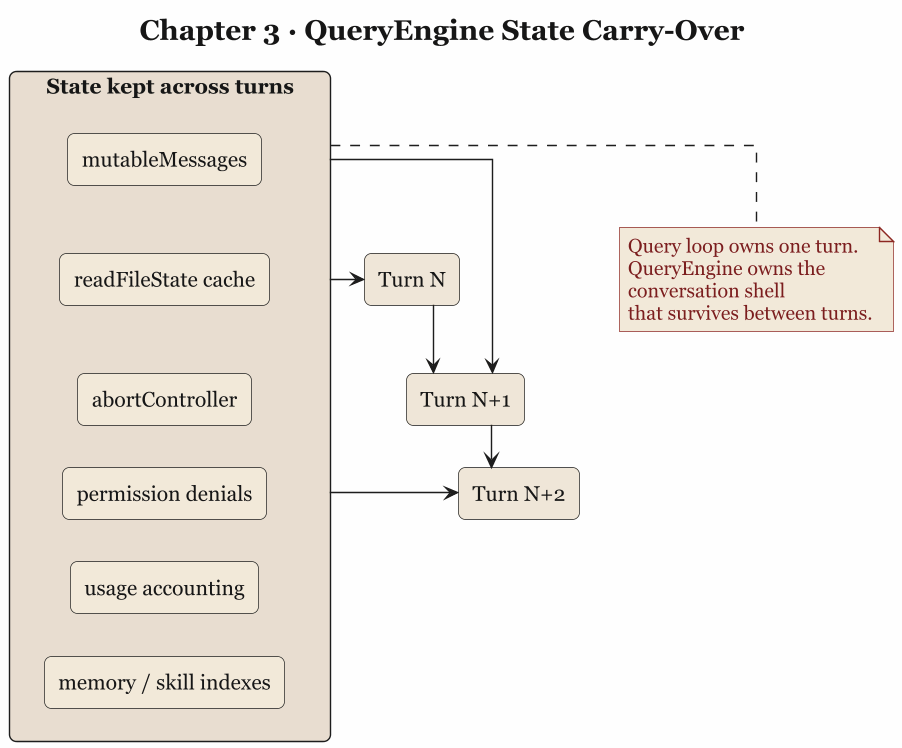

第 3 章 Query Loop：代理系统的心跳
3.1 一个代理系统是否成熟，先看它有没有循环
如果把一个会写代码的模型看成代理系统，最容易犯的错误，就是把它想象成一个加强版问答接口。用户发来一句话，模型输出一个结果，事情就算办完。这种想法并非毫无来由，因为很多大模型产品确实这样工作。但只要系统开始调用工具、跨轮执行、处理中断、保存状态、重试失败、压缩上下文，这种“一问一答”的理解就会迅速失效。
Claude Code 的实现没有犯这个错误。它从结构上明确承认：代理依赖一段持续的、有状态的执行过程。
这一点在 src/query.ts:219 的 query() 和 src/query.ts:241 的 queryLoop() 里表现得很明显。前者只是壳，真正重要的是后者。queryLoop() 不是把模型调用包在一个 try/catch 里就结束，它维护了一套跨迭代状态，处理一系列前置治理动作，然后进入模型流式阶段，再在返回后决定是否进入工具执行、恢复、压缩、继续下一轮，或者直接终止。

这意味着 Claude Code 的核心是维持一个会话内的执行秩序。这里的关键名词是 lifecycle。一个系统是否能被称为 agent，往往不取决于它会不会说，而取决于它能不能在几轮之后仍然知道自己在做什么。
3.2 状态属于主业务
很多系统在设计之初，都倾向于把状态看成包袱，仿佛无状态才更优雅。对代理系统来说，这种偏好作用有限。只要它进入真实工作流，状态就会自然出现。忽视状态，并不能消除状态，只会让它以更难管理的方式返回。
Claude Code 在这里的态度很直接。在 src/query.ts:203 到 :217，系统把 query loop 的可变状态定义得很清楚：
messagestoolUseContextautoCompactTrackingmaxOutputTokensRecoveryCounthasAttemptedReactiveCompactpendingToolUseSummarystopHookActiveturnCounttransition
到了 src/query.ts:268，这些状态在每次 query loop 启动时被整体装配成一个 State 对象，并在后续各个 continue 分支里整体更新。
这一点很重要。Claude Code 没有把恢复、压缩、预算、hook、turn 计数散落在局部变量和布尔开关里，而是承认它们共同构成了“本轮结束后下一轮如何继续”的基础。它把状态当作心跳的一部分。
这就是成熟代理系统和一次性脚本的区别。脚本只关心这一步有没有跑完，代理系统还要关心：这一步失败之后，下一步能不能继续接住前面的世界。
3.3 Query loop 的第一职责是治理输入
从外部看代理系统，很多人会以为它的核心动作是“调用模型”。但在工程上，真正重要的常常是模型调用之前那一长串整理工作。Claude Code 在 queryLoop() 里把这件事写得很清楚。
在正式进入模型流之前，系统会先做这些事：
- 启动相关 memory 的预取，见
src/query.ts:297 - 预取 skill discovery，见
src/query.ts:323 - 截取 compact boundary 之后的有效消息，见
src/query.ts:365 - 应用 tool result budget，见
src/query.ts:369 - 进行 history snip，见
src/query.ts:396 - 进行 microcompact，见
src/query.ts:412 - 进行 context collapse，见
src/query.ts:428 - 最后才尝试 autocompact，见
src/query.ts:453
这串顺序本身就是一种架构声明。它告诉读者，Claude Code 把“上下文治理”放在“模型推理”之前。也就是说，它不把从混乱中整理秩序的责任交给模型，而是先由运行时完成治理，再把更干净的输入交给模型。
这件事很重要，因为很多系统恰恰相反：先把大量上下文塞进去，再寄希望于模型自己判断什么重要，什么不重要。那种做法看似省事，实际上是在把运行时应承担的责任转嫁给概率分布。
Claude Code 的做法更接近传统工程流程：先整理现场，再开始执行。它不追求潇洒，但通常更稳妥。
3.4 调用模型只是循环的一段，不是循环本身
等前面的治理工作都做完，Claude Code 才进入模型调用阶段。这个阶段出现在 src/query.ts:652 往后。这里有个值得专门指出的细节：系统会进入 for await 流式消费模型输出，而不是同步拿一个完整结果回来。
这意味着模型输出在 Claude Code 里是一串事件流，而不只是“最终答案”。事件里可能包含：
- assistant 文本
tool_useblock- usage 更新
- stop reason
- API 错误
这一点在 src/query.ts:826 往后尤其明显。系统会把 assistant message 存起来，提取其中的 tool_use block，决定是否需要 follow-up，还可能边流边把工具送给 StreamingToolExecutor。
从工程角度看，这是一种根本性的变化。一旦把模型输出当成事件流，系统架构就不再只是“请求-响应”，而更像“驱动-调度-反馈”的过程。流式输出的意义，也不只是更早看到几个字，而是允许运行时在模型尚未完全结束之前，就开始安排下一步执行。
这也是为什么前面说 query loop 才是代理系统的心跳，而不是模型调用本身。模型调用只是心跳中的一次收缩，真正维持系统运行的是整套循环：输入如何收进来，流如何消费，工具如何调度，失败如何恢复，何时继续下一轮。
3.5 心跳必须处理中断，否则它就只是惯性
一个真正的心跳，不只是能持续跳动，还必须能在必要时停下来。停不下来，系统就只剩惯性。
Claude Code 对中断的处理写得很实在。在 src/query.ts:1011 往后，系统会优先处理 streaming abort。若启用了 streamingToolExecutor，就必须先消费剩余结果，生成 synthetic tool_result，避免已经发出的 tool_use 没有配套结果；否则，就用 yieldMissingToolResultBlocks() 主动补全中断说明。
这背后有一个很基础的工程原则：只要系统向外承诺了一段执行，就要在中断时把账补平。不能因为用户打断了，就假装前面的几个 tool_use 从未发生。外部系统、UI 和 transcript 都需要一致的因果链，哪怕结果是“中断了”，也必须中断得完整。
这件事之所以重要，是因为代理系统一旦进入多工具、多轮次状态，外部世界对它的要求就不只是“有没有最终答案”，而是“它留下的轨迹能不能被解释”。不能解释的执行轨迹，迟早会变成运维问题、审计问题，或者变成团队里谁也说不清楚的长期隐患。
所以，处理中断是 runtime 的基本责任。已经开始的动作需要有交代，哪怕交代的是“没做完”。
3.6 心跳还必须处理恢复，否则它只是脆弱的重复劳动
如果说中断是外部世界打进来的意外，那么恢复就是系统内部预留的余量。没有恢复能力的循环，不管表面多整洁，最后都会暴露出同一个问题：它把幸运当成了设计。
Claude Code 对恢复的处理是层层递进的，而不是简单重试。最典型的是 prompt-too-long 和 max-output-tokens。
在 src/query.ts:1065 往后，系统会先判断最后一条 assistant message 是否是被 withheld 的 prompt too long。如果是，先试图让 context collapse 把积压的 collapse 提交出去，见 :1086 到 :1116；如果还不够，再进入 reactive compact，见 :1119 到 :1166。也就是说，系统会按成本和破坏性从低到高，逐层尝试恢复。
对 max_output_tokens 的处理也一样。在 src/query.ts:1185 往后，系统先尝试提升 token cap；如果还不行，再生成一条 meta message，让模型从被截断处继续往下做，而不是先道歉、先总结、先写一段体面的空话。
这很能说明 Claude Code 的设计态度。它把恢复看成运行时主路径的一部分，而不是模型失败后的礼貌动作。恢复的意义，在于给系统一个继续工作的机会。在真实工程里，继续工作通常比维持表面体面更重要。
3.7 停止条件不能只有一个，否则系统会把失败和完成混为一谈
普通问答系统的停止条件比较简单：有回答就结束。代理系统不能这么偷懒。因为一个会话里，出现“当前轮结束”并不等于“任务完成”，更不等于“系统成功”。
Claude Code 的 query loop 至少区分了这些情况：
- streaming 正常完成但有
tool_use，需要 follow-up - 没有
tool_use，进入 stop hooks 和可能的后续判定 - 被用户中断
- 触发 prompt-too-long 恢复
- 触发 max-output-tokens 恢复
- stop hook 阻塞导致重进循环
- API 错误直接返回
这可以从 src/query.ts:1062 往后一直看到 :1305。尤其是 stop hooks 那段，在 :1267 到 :1305，系统不仅处理 hook，还专门防止“compact 后仍然太长，再被 hook 阻塞，再继续 compact”的死循环。
这个地方很值得注意。许多系统只有一种朴素想法：失败了就重试。Claude Code 则承认，重试本身也是一种需要被管理的行为。系统必须知道为什么重试、已经试过什么、哪些保护状态不能被重置、哪些情况会导致无限循环。正是这些判断，把一个“会继续试”的系统和一个“知道什么时候不该再试”的系统区分开了。
3.8 QueryEngine 说明它属于会话生命周期
如果 queryLoop() 还不足以说明问题，那么 QueryEngine 的存在就更直接了。
在 src/QueryEngine.ts:176 开始，源码明确写着：
QueryEngine owns the query lifecycle and session state for a conversation.


这句话已经把整章的重点说得很明确。QueryEngine 管理的是一个 conversation 的 query lifecycle，而不是某一次调用。src/QueryEngine.ts:180 还专门说明：一个 QueryEngine 对应一个 conversation，每次 submitMessage() 都是在同一个 conversation 里开启新一轮 turn，状态会持续保存。
到了 src/QueryEngine.ts:675 往后，QueryEngine 把准备好的 messages、systemPrompt、userContext、systemContext、toolUseContext 一起交给 query()，再把 assistant、user、compact boundary 等消息写回 transcript。
这说明 query loop 是会话系统真正的执行中心。外层的 UI、SDK、session persistence 都围着它转。要理解 Claude Code 的设计，不能只看它有哪些工具，也不能只看它 prompt 写了什么，最终还是得看这个循环如何把前面的约束落实成连续行为。
3.9 从源码里可以提炼出的第三个原则
这一章最后可以收敛成一句话：
代理系统的核心能力，是维持可恢复的执行循环。
Claude Code 的源码在几个关键点共同支持这个判断：
query.ts用显式State管理跨轮执行状态，而不是把一切寄托在局部变量上- 模型调用前有大段输入治理逻辑，说明运行时先于推理
- 流式消费把模型输出当事件流，而不是当最终文案
- 中断路径会补齐 synthetic tool_result，说明系统关心因果闭环
- prompt-too-long、max-output-tokens、stop hooks 都走明确恢复分支，说明失败是主路径的一部分
QueryEngine.ts明确把 query lifecycle 当作 conversation 的所有权对象
这意味着一个成熟 agent 的“心跳”至少要满足几个条件：
- 它有明确的跨轮状态
- 它能治理输入，而不只是被动消费输入
- 它能流式地接住模型输出
- 它能补齐中断后的执行账本
- 它能区分完成、失败、恢复和继续
缺少这些结构的系统，也许仍然能做出漂亮 demo，但它们更接近一次性表演，而不是运行时。表演当然有价值，只是不能替代秩序。
下一章要讨论的，是这套心跳最直接碰到外部世界的地方：工具、权限与中断。前面这一章解释了循环为什么存在，下一章要继续说明，循环一旦拥有工具，为什么必须学会克制。